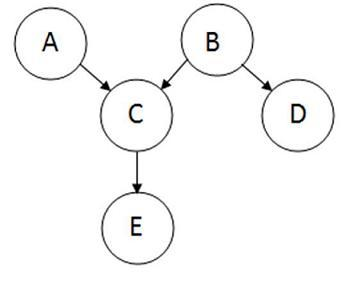

\(\Pr(A|B)=\frac{\Pr(B|A)\Pr(A)}{\Pr(B|A)\Pr(A)+\Pr(B|\neg A)\Pr(\neg A)}\)

\[\Pr(A,B,C,D,E) = \Pr(A)\Pr(B)\Pr(C|A,B)\Pr(D|B)\Pr(E|C) \\ \Pr(A,B,C,D,E) = \Pr(A)\Pr(B)\Pr(C|A,B)\Pr(D|B)\Pr(E|C)\]
\[\Pr(A,B,C,D) \\ = \Pr(A) * \Pr(B|A) * \Pr(C|B) * \Pr(D|B) \\ = (0.4) * (0.3) * (0.1) * (0.95) \]